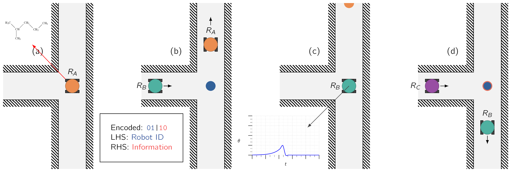
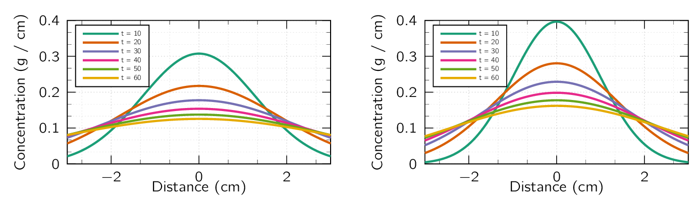

A significant bottleneck of communicating in an EM adversarial environment is the communication between robots themselves in which this paper proposes an alternative method. A key problem is the passing of information from one robot to another to give information deemed important. A simple example would be the its usage in a fork in a cave during initial exploration, which the diagram can be seen in Fig. 1. In this scenario, robot A () would go in the left fork, however for efficiency, the robot B () following needs to know to not repeat what did. This can be accomplished by introducing a scent in a specific part on the path where it can communicate with robot as can be seen in Fig. 1.
It goes without saying, the information carrying speed is nowhere near to that of EM, however, the goal here is not to have a high-throughput bi-directional communication but to leave short messages for other robots to find.

| Compounds | Diffusion | Compounds | Diffusion |
| Cholorobenzene | Toluene | ||
| Ethylbenzene | o-Xylene |
An important factor to allow information to be embedded to a surface and to retain the content of the information is to use chemicals which can generate detectable vapour for a practically useful amount of time. An to that benefit, a useful class of chemical compound is Volatile Organic Compound (VOC) [29]. These compounds have high vapour pressure at room temperature and are relatively common-place. These chemicals also allow communication between animals and plants, such as attracting pollinators, or protection from predators [30, 31, 32] which makes it a good candidate for robotic communications using bio-mimicry.
When a robot sprays a compound onto a surface, the open surface of the liquid will enable evaporation due to the imbalance of thermodynamic equilibrium. The evaporation is defined not only by geometrical parameters such as thickness and surface area but also by its temperature and chemical composition. However, for practical applications, simplifications can be made [26]. As discussed in Section 2, the primary agent which defines the propagation is diffusion, and therefore that parameter will be looked to observe the range of velocity. A selection of diffusion coefficient values are shown in Table 1 and the behaviour of two chemicals with different diffusion values is shown in Fig. 2.
The diffusion coefficients can also be calculated using the following empirical relation [33] for simulation purposes:
| (5) |
where can range from to , which is a comfortable range for a robot to operate on and is the energy of molecular interaction, which for air the value is taken to be 9.7 [34].
To measure the chemical concentration with the accuracy needed for embedding information, a chemical sensor capable of distinguishing scents is needed. To that end there are two options commercially available:
Electronic Nose A standard tool which is used in detecting and analysing odours and providing precise information, known as a “fingerprint” about mixed gases and scents [35] with studies done to implement this technology to mobile robotics [36].
Mass Spectrometers A powerful analytic technique used to quantify known and unknown compounds within a sample, and determine the chemical properties of different molecules, which has been use by robots as a mobile lab instead of a sensor for the robot itself [37, 38].
While the ability to put information is useful, it is nevertheless in our advantage to squeeze as much information as possible and to that end a method using multiple chemicals needs to be employed.
As the proposed mode of communication requires two-axis (i.e., multi-chemical communication) it could be useful to separate the communication channel to two independent channels. While this increases the complexity of the communication, there are advantages compared to EM-based communication. An important one worth mentioning is that if adequately separate chemicals are chosen, there is no possibility of cross-talk and as communication is done through particles instead of waves, there are no problems with scattering or reflection.
The amount of mappable item onto a chemical amplitude can be expressed by the cardinality of the input set with following equation [39]:
| (6) |
where is the number of modulated chemical levels and is the number of distinguishable chemicals used in the transmission of information. Based on this, the channel capacity of an block transmission with memory effects can be written using the following equation [40]:
| (7) |
In Eq. (7), represents the mutual information between the input and the output alphabet with the following relation [41]:
| (8) |
where is the Shannon entropy of the probability vector and is the conditional entropy of given .
In macro-scale MC, the effects of Inter-Symbol Interference (ISI) on the channel behaviour needs discussion. MC uses particles to conduct transmission and as the transmission evolves the leftover chemicals in the environment and/or the detector may pose a hindrance on the usable information rate. This can cause incorrect decoding at a different rate (i.e., ). Therefore, every value in the probability matrix needs to be calculated individually as the ISI may effect the values unevenly making the behaviour of the channel asymmetric [42].
As indicated, a unique attribute of MC is the ability to increase the amount of carrier signals in a given channel. For example, in [39] it was shown transmitting multiple chemicals at the same time is possible. In addition, this doesn’t limit the number of concurrently usable chemicals to only two as more chemicals can be used simultaneously without cross-talk3. These chemicals have the possibility of transmitting information with negligible interference when chosen carefully4.
In the analysis, two chemicals were chosen for the application. It is assumed the messenger chemicals have no alignment in their mass spectrum which can cause interference. The number of modulated levels () will be which a sample of the received signal can be seen in Fig. 3. To theoretically define the Symbol-Error Rate (SER) and to validate the proposed model, multivariate normal distribution is employed. The probability density function (PDF) of of the distribution is given as;
where is the number of dimensions, is the expected value of (i.e., ) and is the covariance matrix with the following identity,
and is the determinant of . To calculate the probability occurring during transmission, the conditional probability of the distribution is applied [43].
| (9) |